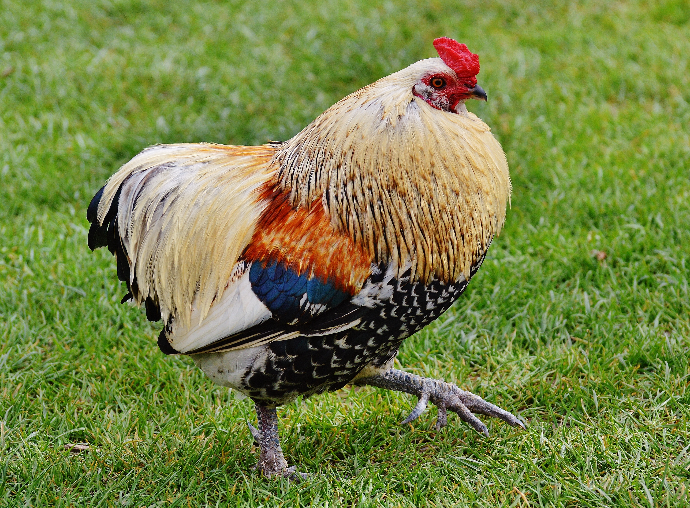
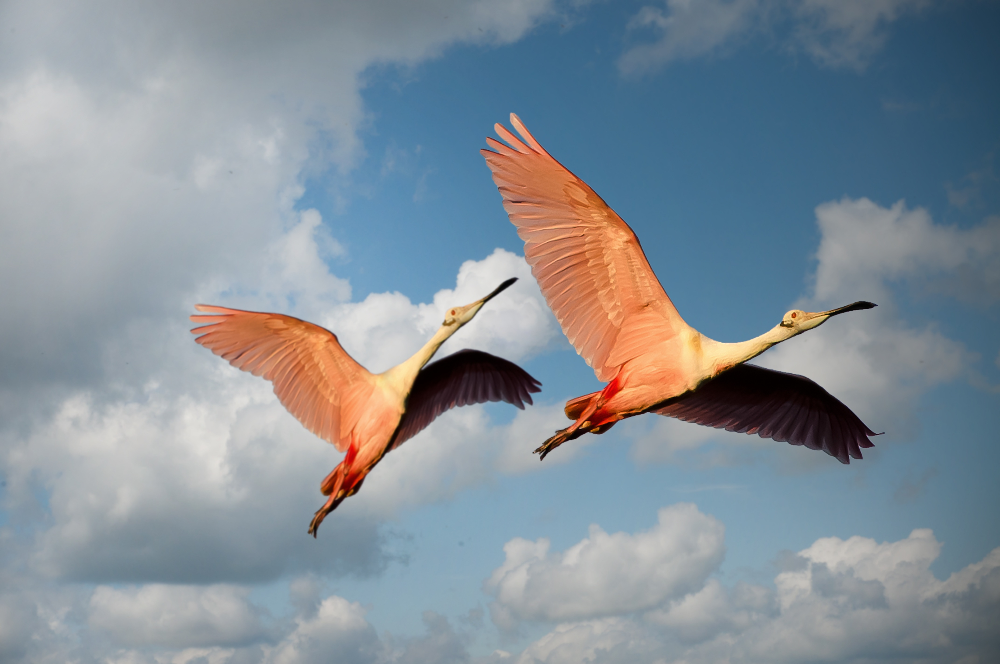
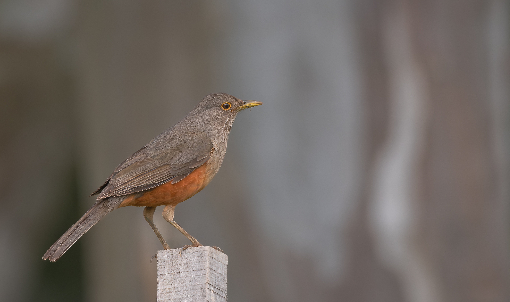

Aves avistadas
Gallina
Descripción Imagen de Pollo, Pájaro y Aves terrestres. De uso gratuito.
Ubicación: San Carlos, Región de Ñuble
Hora de avistamiento: 11:30

Flamencos
Descripción Imagen de Flamencos, Aves y Pareja. De uso gratuito.
Ubicación: Maullín, Región de Los Lagos
Hora de avistamiento: 15:30

Zorzal Colorado
Descripción El zorzal colorado (Turdus rufiventris), también conocido por zorzal común o, de vientre rufo, es una especie de ave paseriforme de la familia Turdidae que vive en Sudamérica.
Ubicación: Macul, Región Metropolitana
Hora de avistamiento: 16:20
